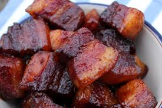

Smoked Pork Belly Burn Ends

Ingredients
- 4-5 pounds pork belly
- 2-3 tablespoons olive oil
Rub
- 1/4 cup brown sugar
- 2 tablespoons coarse Kosher salt
- 1 tablespoon freshly ground black pepper
- 1 tablespoon paprika
- 1 teaspoon chili powder
- 1/2 teaspoon garlic powder
- 1/2 teaspoon onion powder
- 1/4 teaspoon cayenne pepper
Sauce
- 1/2 to 1 cup BBQ Sauce
- 4 tablespoons butter
- 1/3 cup honey
Directions
Contact Me
If you'd like to learn more about cooking on your Yoder smoker
Email me!